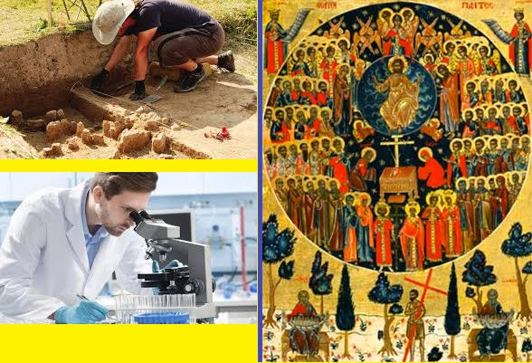

Paroisse Orthodoxe Sainte Clotilde
Experts modernes, Tradition de l'Eglise : qui croire? Voici les vidéos sur ce sujet :
- Ni ombre ni doute : réponse à l'émission "L'Ombre d'un doute" sur Jésus :
Partie 1
Partie 2
Partie 3
Partie 4
- La Nativité de Notre Seigneur Jésus-Christ :
la Vérité
Réponses aux objections
- La Création :
Le créationnisme est-il un danger?
La révolution copernicienne : un point de vue Orthodoxe
Darwin et l'Orthodoxie
Réponse Orthodoxe au scientisme
Jésus a-t-il existé? Réponse à Michel Onfray
Codes mathématiques dans le Nouveau Testament
Tradition et Révélation primordiales
